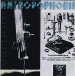

| Artist: | Antropophobia |
| Title: | Vacuum |
| Label: | self produced |
| Length(s): | 58 minutes |
| Year(s) of release: | 1999 |
| Month of review: | 07/2000 |
| 1) | Misanthrope | 4.26 |
| 2) | Salvation Is To Build | 4.34 |
| 3) | If I Could Reign | 3.26 |
| 4) | Window | 5.05 |
| 5) | Hti | 6.36 |
| 6) | Mines | 2.58 |
| 7) | Out Of This World | 3.25 |
| 8) | Ignorance | 6.00 |
| 9) | Diabolus In Voce | 1.33 |
| 10) | Window | 5.40 |
| 11) | Out Of This World | 3.37 |
| 12) | Mines | 2.22 |
| 13) | Hti | 6.39 |
| 14) | Fear, Mathematics, Confusion | 1.33 |